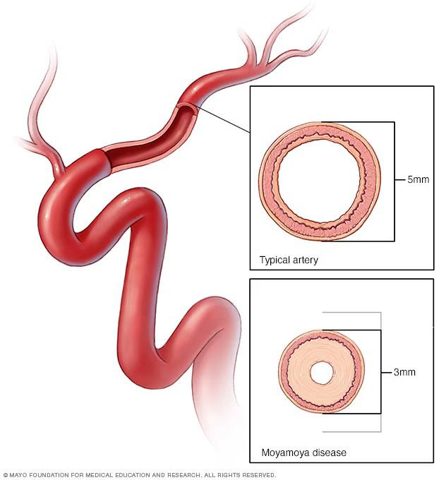
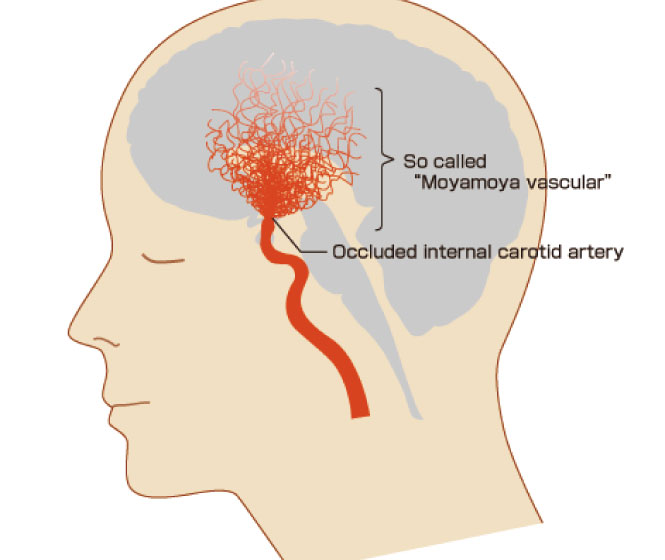
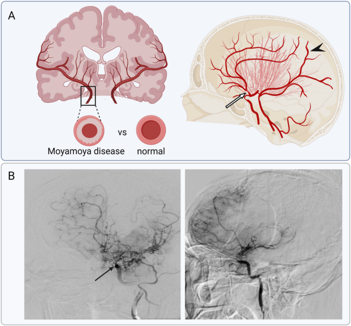
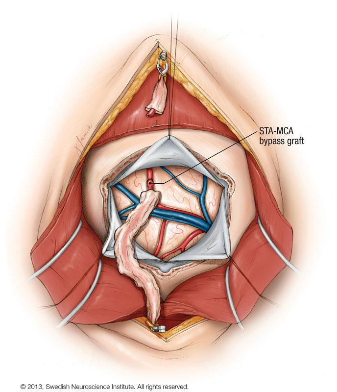

مرض مويا مويا
MOYAMOYA DISEASE (MMD)
Etiology, Pathophysiology, Diagnosis & Modern Surgical Interventions
ما هو مرض مويا مويا؟ Understanding MMD
التعريف الطبي الدقيق (Clinical Definition)
هو اضطراب وعائي دماغي انسدادي مزمن ونادر (Rare, Chronic, Occlusive Cerebrovascular Disorder)، يتميز بحدوث تضيق تدريجي مطّرد في النهايات الطرفية للشرايين السباتية الباطنة (Terminal Internal Carotid Arteries) وتفرعاتها القريبة.
-
نقص التروية المزمن (Chronic Hypoperfusion) انخفاض حاد في تدفق الدم المؤكسج إلى قشرة الدماغ يضع الأنسجة العصبية في حالة تهديد دائم.
-
الأوعية الجانبية الشاذة (Abnormal Collaterals) يحاول الجسم تعويض الانسداد ببناء شبكة شبيهة بـ "نفثة الدخان" هشة وقابلة للتمزق.

ظاهرة "نفثة الدخان" The Puff-of-Smoke Sign
كيف تتشكل سحابة الدخان الوعائية؟
عندما تفشل الشرايين الرئيسية في إيصال الدم، تتوسع الشرايين الثاقبة الصغيرة القاعدية (Lenticulostriate & Thalamoperforating arteries) وتتشابك مع تفرعات السحايا والأوعية السطحية مكونة شبكة متكتلة تظهر كالدخان المتصاعد في القسطرة الظليلة.


مضاعفات الأوعية الجانبية الشاذة Major Vascular Hazards
النزيف داخل القحف (Intracranial Hemorrhage)
تمزق الأوعية الجانبية الهشة تحت ضغط الدم، مسبباً نزيفاً تحت العنكبوتية أو نزيفاً بطينياً خطيراً.
السكتة الإقفارية (Ischemic Stroke)
عجز الشبكة الوعائية التعويضية عن توفير كمية كافية من الدم للأنسجة، مما يؤدي لموت خلايا الدماغ.
نوبات نقص التروية العابرة (TIAs)
هبوط مفاجئ مؤقت في التدفق الدماغي ينتج عنه فقدان مؤقت للوظائف الحركية أو النطق.
تكوّن أمهات الدم الدقيقة (Microaneurysms)
تمددات جدارية كيسية صغيرة على الأوعية الضعيفة تتضاعف معها احتمالية الانفجار والنزف.
النزوف الدقيقة داخل الدماغ (Cerebral Microbleeds)
تسريب مزمن ومجهري لكريات الدم الحمراء داخل المادة الدماغية يسرّع التدهور المعرفي.
نقص التروية المزمن (Chronic Hypoperfusion)
حرمان خلايا المخ من الأكسجين والمغذيات الحيوية على المدى الطويل متسبباً في ضمور دماغي.
التوزيع الوبائي وعوامل الخطورة Demographic Profile
المسببات والاستعداد الوراثي
على الرغم من أن السبب الدقيق لا يزال غير محدد بدقة، إلا أن وجود طفرات جينية محددة (مثل جين RNF213) وتجمع الحالات داخل العائلات يثبت دور العامل الوراثي، مع انتشار ملحوظ في أصول شرق آسيا (اليابان، كوريا، الصين)، مع تسجيل حالات متزايدة حول العالم.
الحالات المتلازمة المصاحبة (Associated Syndromes)
• فقر الدم المنجلي (Sickle Cell Disease) | • متلازمة داون (Down Syndrome) | • الورام الليفي العصبي (NF Type-1).
نمط ثنائي القمة (Bimodal Peaks)
العلامات والأعراض السريرية Symptomatology
1. مظاهر عصبية
Neurological Signs
- نوبات نقص التروية (TIAs) عابرة ومتكررة.
- سكتات إقفارية ونزفية تسبب تلفاً دائماً.
- نوبات تشنج وصرع (Seizures).
- صداع متكرر وعنيف مقاوم للمسكنات.
2. مظاهر حركية
Motor Impairments
- ضعف شقي (Hemiparesis) في أحد نصفي الجسم.
- شلل نصفي كامل (Hemiplegia).
- صعوبة واضطراب المشي واختلال التوازن.
- حركات لاإرادية غير منتظمة (Chorea).
3. مظاهر معرفية وسلوكية
Cognitive & Behavioral
- تدهور الذاكرة وصعوبة استرجاع المعلومات.
- صعوبات تعلم حادة وتراجع التحصيل المدرسي.
- تشتت وضعف التركيز الذهني المستمر.
- تأخر نمائي شامل عند الرضع والأطفال.
التشخيص والتصوير الشعاعي Imaging & Workup
الرنين المغناطيسي وقسطرته (MRI / MRA)
الخط الأول • First-Lineالرنين المغناطيسي (MRI) يكشف الاحتشاءات الإقفارية الحديثة والقديمة بدقة فائقة. تصوير الأوعية بالرنين (MRA) غير تداخلي ويوضح تضيّق الشريان السباتي الباطن وتفرعاته بدون إشعاع، وهو مثالي للمتابعة.
المقطعية وقسطرتها (CT & CTA)
طوارئ • Emergencyالأسلوب الأسرع في غرف الطوارئ لاستبعاد النزيف الدماغي الحاد وتحديد حجم الجلطة مع رسم شرايين الدماغ بـ CTA لتقييم الانسداد بدقة سريعة.
دراسات التروية الدماغية (Perfusion Studies)
تقييم الاحتياطي الوعائي الدموي (Cerebrovascular Reserve)، وتعتبر حجر الزاوية عند التخطيط للجراحة الترقيعية لتحديد المناطق الأكثر حرماناً من الدم.
القسطرة الرقمية الظليلة (DSA)
تظل Digital Subtraction Angiography الفحص الأكمل والنهائي لتشخيص وتصنيف درجات مويا مويا (مراحل سوزوكي الستة Suzuki Stages)؛ حيث تبرز بدقة مجهرية تضيق السباتي الباطن الطرفي وشبكة الأوعية القاعدية الهشة المتشابكة.
العلاج الدوائي والرعاية الداعمة Conservative Management
1. الرعاية الداعمة (Supportive Care)
تهدف لحماية الدماغ من أي هبوط في التروية يفاقم الإقفار:
2. العلاج الدوائي الموجه (Pharmacotherapy)
مثل الأسبرين (Aspirin): يُقلل من تجمع الصفيحات وتكوّن الخثرات، مما يخفف من خطر السكتات الإقفارية المتكررة.
مثل الوارفارين (Warfarin): يُتجنب استخدامها بشكل عام لخطورتها العالية في إحداث نزيف دماغي مميت من الأوعية الهشة، ولا تُعطى إلا بدواعٍ نادرة جداً.
تساهم في تخفيف الصداع الوعائي وتقليل معدل حدوث نوبات نقص التروية العابرة (TIAs).
جراحة إعادة التروية الدماغية Surgical Revascularization
الهدف الاستراتيجي للجراحة
استعادة التروية الدموية المستدامة لأنسجة المخ المعرضة للموت، وخفض الضغط على الأوعية الجانبية الهشة لمنع تكرار النزيف والجلطات الدماغية.
مجازة STA–MCA
توصيل مباشر بين الشريان الصدغي السطحي (STA) والشريان المخي الأوسط (MCA) لتوفير تدفق دموي فوري ولحظي للأنسجة.
تحفيز الأوعية (EDAS/EMS)
وضع أنسجة ذات تروية غنية (عضلات/سحايا) على سطح القشرة لتحفيز نمو أوعية دموية جديدة تدريجياً، وهي خيار مثالي للأطفال.

مستقبل مرضى مويا مويا ورسالة الأمل Hope & Outlook
بروتوكول ما بعد الجراحة (Postoperative Care)
- مراقبة عصبية دقيقة ومكثفة في وحدة العناية الحرجة للكشف عن فرط التروية (Hyperperfusion).
- التحكم الصارم بضغط الدم لمنع النزف المفاجئ أو تلف التوصيلة الشريانية.
- متابعة دورية بالتصوير (MRA / Angiography) لضمان نفاذية المجازة ونمو الشرايين.
- برامج التأهيل الحركي والنطقي لاستعادة الوظائف العصبية المفقودة.